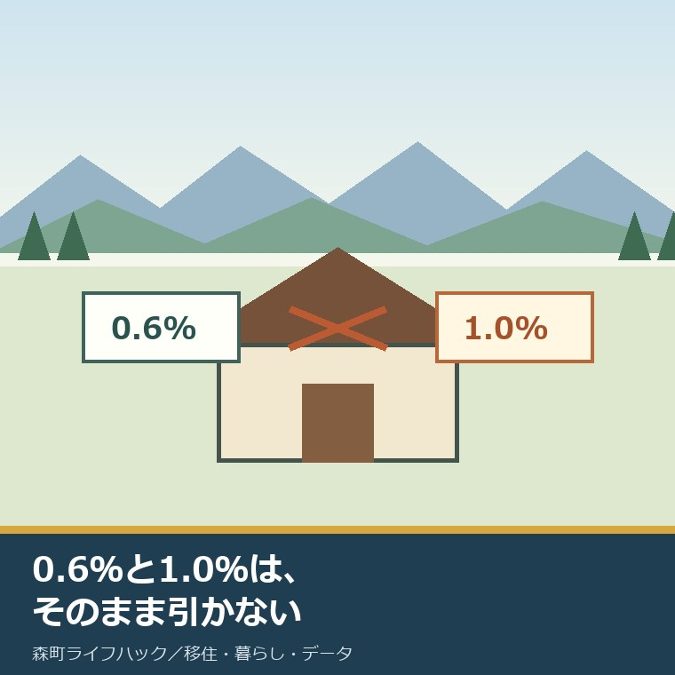
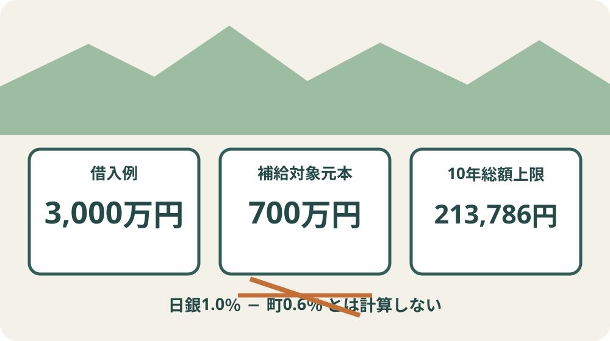
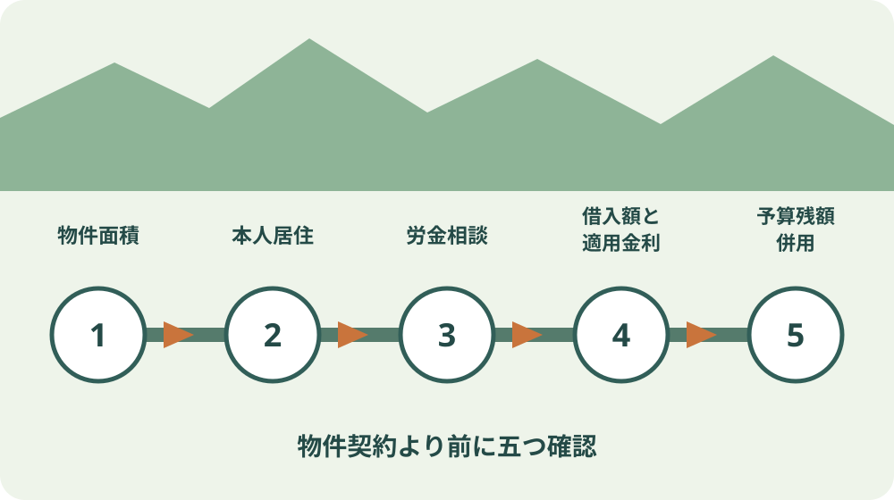

森町の住宅ローン支援｜利子補給0.6％を比較

この記事の要点
Q. 森町の0.6％利子補給で、住宅ローンの負担はどこまで減りますか。
A. 補給対象は借入額のうち最大700万円、期間は借入年度から10年、総額上限は213,786円です。2026年7月の日銀の1.0％は住宅ローン金利ではないため、0.6％を引いて実質0.4％とは計算できません。労金の適用金利と返済表を先に出して比べます。
森町で家を買うとき、物件価格の次に気になるのが住宅ローンの金利です。
町には「森町勤労者住宅建設利子補給制度」があります。年0.6％相当という数字は、金利が上がる局面では大きく見えます。
一方、日本銀行は2026年7月31日、無担保コール翌日物を1.0％程度で推移するよう促す方針を決めました。
ここで0.6％と1.0％をそのまま引くと、制度も家計も読み違えます。二つは対象が違う数字です。
この記事は2026年9月6日に、森町の制度案内と要綱、日本銀行の2026年7月31日資料を照合して書いています。
体験ストックには、私や相談者がこの利子補給を受けた記録がありません。交付を受けた、労金で説明を聞いたとは書きません。
私の意見はこうです。0.6％と1.0％を引いて、実質0.4％だと思ったら間違い。日銀の短期金利と住宅ローンの適用金利は別物です。
対象元本は700万円、10年総額上限は213,786円
森町の制度は、静岡県労働金庫から住宅建設資金を借りた、町内の勤労者を対象とします。
対象となる借入額は、1件700万円までです。住宅ローンを3,000万円借りても、3,000万円全体が補給計算の対象にはなりません。
補給率は年0.6％相当、補給期間は借入年度から10年です。
町公式ページが示す補給総額の上限は213,786円です。0.6％を10年間、借入残高全体から単純に引く計算ではありません。
要綱は、年0.60％、10年月賦元利均等償還の方法で補給額を算出すると定めています。
実際の住宅ローン返済期間が35年でも、補給額の算定は要綱の10年前提です。
実際の住宅資金の年利率が0.6％を下回る場合は、その実際の年利率を超えて補給しません。
初年度だけを粗く見るなら、700万円×0.6％は42,000円です。ただし元本の減少を無視した目安で、公式の初年度交付額ではありません。

日銀の1.0％は住宅ローンの適用金利ではない
日本銀行の2026年7月31日資料は、無担保コールレートの翌日物を1.0％程度で推移するよう促すとしています。
これは金融機関同士が短期で資金をやり取りする市場の目標で、個人へ提示される住宅ローンの適用金利ではありません。
日銀資料自体も「住宅ローン金利を1.0％にする」とは書いていません。「維持」という言葉も本文にはありません。
したがって、1.0％−0.6％＝0.4％を家族の実質金利として使うことはできません。
住宅ローンには、基準金利、引下げ幅、実際の適用金利、固定期間、団体信用生命保険の上乗せなど別の項目があります。
比べるときに使うのは、借入予定日に労金が提示する適用金利と、借入総額、返済期間、固定か変動か、毎月返済額です。
日銀の短期金利は、今後の金利環境を見る材料です。自分の返済額を直接計算する数字ではありません。
3,000万円借りる家族の比較表
仮に住宅取得で3,000万円を借りる家族を考えます。実際の適用金利は仮定せず、町の補給部分だけを分けます。
補給対象元本700万円は、3,000万円の23.3％です。残る2,300万円は町の利子補給の対象外です。
総額上限213,786円を120か月へ均等に割ると、月平均約1,782円です。実際は年2回、残高に応じて交付されるため、毎月同額で返済額から引かれるわけではありません。
10年分の上限213,786円は、3,000万円の借入元金に対して約0.71％です。これは10年間の合計比で、年利ではありません。
この数字だけで制度が小さいと切り捨てるのも違います。固定資産税、火災保険、修繕積立へ年単位で回せる金額です。
反対に、213,786円を理由に3,000万円の借入を増やすのは勧めません。借入額を10万円下げる方が、補給差より大きい場合があります。
| 比べる数字 | 値 | 読み方 |
|---|---|---|
| 住宅ローン借入例 | 3,000万円 | 家族が金融機関へ返す元金。仮の比較値 |
| 補給対象元本 | 最大700万円 | 借入例の23.3％。借入全体ではない |
| 補給率 | 年0.6％相当 | 10年月賦元利均等償還で算出 |
| 補給総額上限 | 213,786円 | 10年間の上限。年額ではない |
| 日銀の短期金利 | 1.0％程度 | 住宅ローン適用金利とは別 |
新築・中古・増改築・土地購入が対象
対象用途は、自分が住む森町内の住宅の新築、増改築、建売住宅の購入、中古住宅の購入です。
住宅建設用地の購入も対象ですが、借入日から5年以内に住宅を建てる条件があります。
新築または増改築する住宅の床面積は、70平方メートル以上280平方メートル以下です。
建売住宅、中古住宅、住宅建設用地では、敷地面積400平方メートル以下という条件があります。
空き家バンクの中古住宅でも、自動的に対象になるわけではありません。敷地面積、本人居住、借入先などを確認します。
森町の空き家バンク23件を価格で比べた記事で候補を絞った後、土地・延床面積を制度条件と照合します。
森町で家を買う前の一般ガイドでは、固定資産税、空き家バンク、ほかの住宅支援も別に確認できます。
良い点：中古住宅と土地も入口に入る
良い点の一つ目は、新築だけでなく中古住宅の購入と増改築を対象にしていることです。
空き家を使う家族は、購入費だけでなく水回り、屋根、耐震、残置物へ費用を分けます。借入利子の一部が戻ることは、修繕余力につながります。
二つ目は、土地の先行取得にも5年の建築猶予があることです。用地を取得した年と建築する年がずれる家族にも入口があります。
三つ目は、町と労金の間で年2回交付する仕組みが要綱に書かれていることです。個人が毎回町へ計算書を持ち込む形ではありません。
森町の人が家を建て、直し、住み続けることは、空き家の増加と地域の後継に関わります。小さな利子補給でも、住み続ける選択を支える意味があります。
注文したい点：予算残額と個人の締切を見せてほしい
その上で、町の案内には注文があります。2026年9月6日時点の予算残額と、個人がいつまでに労金へ相談すべきかは、公式ページで確認できません。
ページには、予算額へ到達すると受付を終了するとあります。物件契約後に制度を知ると、申込みが間に合わない可能性があります。
要綱の4月末と10月末は、労金から町への交付申請期限です。個人のローン申込期限と読み替えないことが必要です。
他の住宅支援と併用できるかも、町のページと要綱では確定できません。
正直に言えば、総額上限が明記されても、予算残額と受付順が見えなければ、契約前の資金表には確定額として置けません。
担当する町職員と労金は、借入審査、交付計算、年2回の手続きをすでに担っています。問い合わせを減らすためにも、年度、残額、相談期限、併用の一覧が要ります。
制度を続ける担い手が限られるなら、人の説明だけでなく、更新日のある一枚へ残すことが必要です。

申込みは物件契約より前のローン相談で伝える
一段目は、候補物件の土地面積と延床面積を資料から確認することです。新築・増改築か、中古・建売・土地かで見る面積が違います。
二段目は、自分が住む住宅かを確認します。賃貸へ出す予定の家や事業用だけの建物として進めません。
三段目は、静岡県労働金庫へ住宅ローンを相談するときに、森町の利子補給を利用したいと先に伝えることです。
四段目は、借入総額、対象になる700万円、実際の適用金利、返済期間、固定・変動、団信上乗せを別々に書くことです。
五段目は、予算残額、個人が用意する書類、申込時期、他制度との併用を労金へ確認することです。
窓口は静岡県労働金庫です。町の制度ページは袋井支店、袋井市泉町1丁目7番13号、電話0538-43-4649を案内しています。
森町で家を建てる前の一般ガイドも使い、耐震、確認申請、造成、建築費を利子補給とは別に見ます。
交付が止まる条件も先に書く
補給対象の住宅をほかの用途へ転用した場合、譲渡した場合、貸した場合は、その後の交付が止まります。
住宅ローンを全額繰上返済した後も、交付は続きません。
家族の転勤、親との同居、売却、借り換えを考えるときは、利子補給への影響を労金へ確認します。
補給総額だけでなく、10年以内に住み方が変わる可能性を家族で話します。
森町の町営住宅6団地121戸の記事は、住宅を買わない選択肢と比べる材料です。
森町の結婚新生活支援の記事では、住宅取得費や住宅賃借費の対象時期を別に整理しています。併用できるとは決めつけず、両方の窓口へ確認します。
対案・結論：今日、返済表に補給欄を一列足す
森町の住宅ローン利子補給は、対象元本700万円、年0.6％相当、借入年度から10年、総額上限213,786円です。3,000万円を借りるなら、対象は元金の23.3％に限られます。
今日できる小さな一歩は、金融機関の返済予定表の右側へ「森町利子補給」という一列を足し、借入全体と分けることです。未相談なら金額欄は空欄にし、対象元本700万円と総額上限だけを書きます。
日銀の1.0％は差し引きません。労金から提示された適用金利、返済期間、毎月返済額を受け取ってから、補給あり・なしの10年合計を二本で比べます。
213,786円は助けになりますが、家を買う理由にはしません。修繕、税、保険、移動費まで入れ、補給がなくても返せる額へ借入を下げることが先です。
家族に残す記録：六つの数字を同じ日付でそろえる
一つ目は物件価格、二つ目は借入総額、三つ目は適用金利、四つ目は返済期間、五つ目は毎月返済額、六つ目は補給見込額です。
すべてに見積日を付けます。日銀の決定日、ローンの提示日、町制度の確認日が違うことを残します。
面積は土地と延床を分けます。70〜280平方メートルの条件と400平方メートル以下の条件を混ぜません。
予算残額、申込期限、併用、繰上返済、借り換えは、確認した担当者と回答日も書きます。
家の維持費には、固定資産税、火災保険、地震保険、浄化槽、草刈り、10年以内の修繕を入れます。
補給の記録だけを家族から切り離さず、住宅費全体の一列として残します。
大石の視点：21万円より借入100万円を動かす
大石浩之（磐田市／不動産業）として、利子補給を使える家族は、契約前に確認して使う方がよいと考えます。
ただ、総額上限213,786円を見て物件予算を上げるのは止めます。価格交渉、借入額、修繕範囲を100万円単位で動かす方が返済へ効きます。
私には受給体験がありません。ここからは不動産の資金表を作る側としての意見です。
正直に言えば、0.6％という表示だけを見ると、私も住宅ローン全体から0.6ポイント下がるように一瞬感じます。
だから数字を三つへ割ります。借入総額、対象元本700万円、補給総額213,786円です。
原則1の「分からないことは確認する」で見れば、2026年度の予算残額、個人の相談期限、併用可否は空欄のまま労金へ持っていく項目です。
森町で住まいを維持する人は、返済だけでなく草刈り、修繕、車での移動、地域の役を担っています。
その負担を認めたうえで、21万円をもらう話より、10年後も維持できる借入額を決める。私はそちらを住宅支援の中心に置きます。
まとめ：0.6％は700万円部分へ使う
森町の勤労者向け利子補給は、静岡県労働金庫から借りる町内の本人居住住宅が対象です。
対象元本は最大700万円、年0.6％相当、借入年度から10年で、町公式の補給総額上限は213,786円です。
日本銀行の2026年7月31日の1.0％程度は短期市場の目標で、住宅ローンの適用金利ではありません。
今日、返済表へ補給欄を一列足し、物件契約前に労金へ予算残額、期限、併用を確認します。
よくある質問
Q1. 森町の住宅ローン利子補給はいくらですか。
A1. 対象借入額は1件700万円までで、年0.6％相当を借入年度から10年間補給します。町公式ページが示す補給総額の上限は213,786円です。実際の借入額全体や金利から一律に0.6ポイントを引く制度ではありません。
Q2. 日銀の短期金利1.0％から補給率0.6％を引けばよいですか。
A2. 引けません。日銀が2026年7月31日に1.0％程度で推移するよう促すと決めたのは無担保コール翌日物です。個人の住宅ローン適用金利とは別の数字です。労金の実際の適用金利、借入総額、返済期間、固定か変動かを使って比較します。
Q3. 森町の利子補給はどこへ申し込みますか。
A3. 町公式ページは静岡県労働金庫を窓口として案内しています。物件契約や借入実行の後ではなく、住宅ローン相談の時点で森町勤労者住宅建設利子補給制度を利用したいと伝え、面積、借入額、予算残額、他制度との併用を確認します。
参考にした公式情報
- 森町勤労者住宅建設利子補給制度／静岡県森町（2025年4月1日更新。対象者、用途、面積、対象借入額、補給率、期間、総額上限、受付終了条件、労金窓口を2026年9月6日に確認）
- 森町勤労者住宅建設資金利子補給要綱／静岡県森町（最終記載改正は2023年2月27日、施行は2023年4月1日。算定方法、交付回数、停止条件を2026年9月6日に確認）
- 2026年7月31日の金融運営決定資料／日本銀行（2026年7月31日12時11分公表。無担保コール翌日物を1.0％程度で推移させる決定を2026年9月6日に確認）

磐田市で小さな不動産業を営みながら、森町の空き家・農地・実家じまいの相談を受けています。地域と不動産実務をつなぐ目線で確認の順番を書きます。
最終確認日：2026-09-06 ／ 適用金利、予算残額、個人の申込時期、必要書類、他制度との併用は変わることがあります。2026年度の予算残額と併用可否は公開資料で確認できていません。物件契約、借入実行、繰上返済、借り換えの前に静岡県労働金庫へ確認してください。